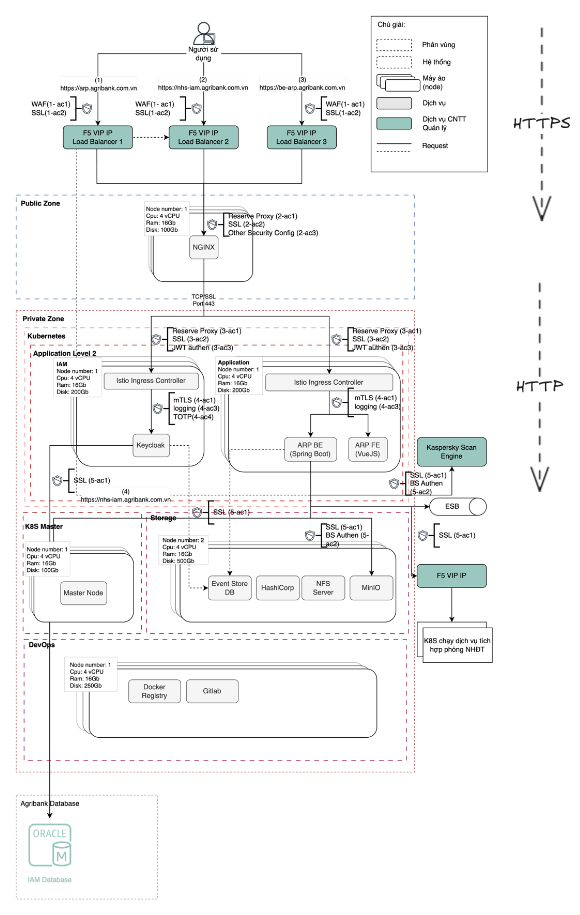
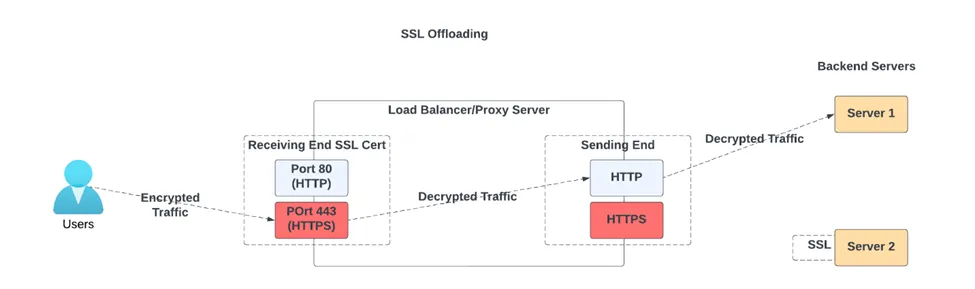
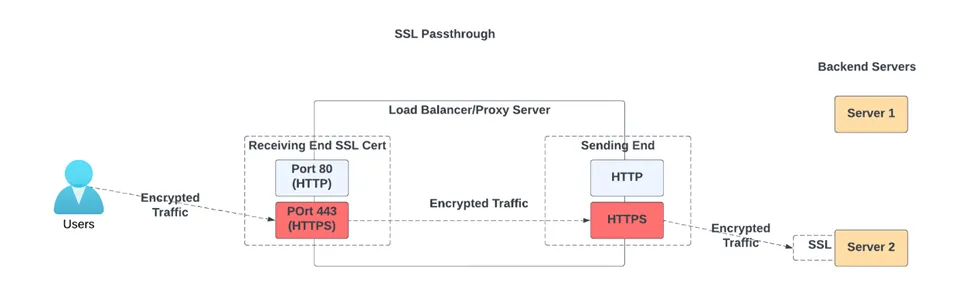
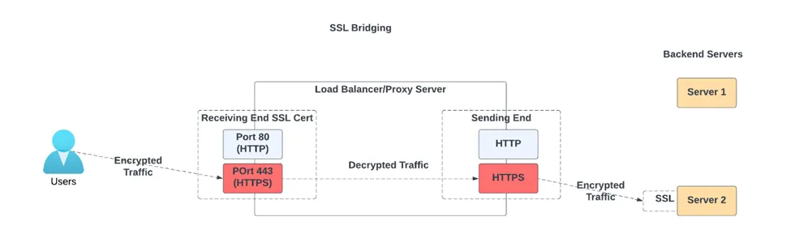

Passthrough
Client TLS
Proxy
Read SNI
No decrypt
Forward TLS
Backend TLS


Client → HTTPS → Edge proxy → HTTP hoặc re-encrypt → App



| Tiêu chí | Passthrough | Bridge | Terminate |
|---|---|---|---|
| Request inspect | Không | Có | Có |
| SSL overhead ở proxy | Thấp | Cao nhất | Trung bình |
| SSL overhead ở backend | Cao | Cao | Thấp hoặc không có |
| Rủi ro plaintext nội bộ | Thấp | Thấp | Cao hơn nếu không mã hóa lại |
| WAF / auth / rate limit theo HTTP | Khó | Dễ | Dễ |
Bridge và terminate inspect mạnh hơn. Passthrough và bridge giữ internal hop kín hơn.
| Layer | Ánh xạ thực tế | Inspect bằng gì | Ví dụ nhìn thấy gì |
|---|---|---|---|
| L1 Physical | Signal / wire / radio |
ethtoolNIC stats
Link LEDs
|
Link up/down
Speed:
1GbpsDuplex:
fullSignal level
|
| L2 Data Link | Ethernet / MAC / frame |
tcpdump -eip linkbridge vlan show |
MAC:
00:1a:2b:3c:4d:5eVLAN:
20EtherType:
0x0800 |
| L3 Network | IP packet |
ip routetraceroutetcpdump -n |
Src IP:
10.10.10.10Dst IP:
172.16.1.25TTL:
64 |
| L4 Transport | TCP / UDP |
ss -tnpnetstat -antcpdump tcp port 443 |
Src port:
51544Dst port:
443Seq:
12345State:
ESTABLISHED |
| L5 Session | Logical session |
openssl s_client -reconnectSession logs
|
TLS session reuse
Session ID
Keep-alive
Reconnect context
|
| L6 Presentation | TLS / encoding / format |
openssl s_clienttshark -d tcp.port==443,tls |
TLS:
1.3Cipher:
TLS_AES_128_GCM_SHA256Cert CN
SNI:
api.example.com |
| L7 Application | HTTP / DNS / SMTP |
curl -vngrepApp logs
DevTools
|
GET /ordersHost: api.example.comAuthorization: Bearer ...200 OK |
| Nền tảng / trình duyệt | Root CA trust store |
|---|---|
| Windows / Edge / Chrome trên Windows | Microsoft Trusted Root Program |
| macOS / iOS / Safari | Apple Trust Store |
| Firefox | Mozilla Root Store / NSS |
| Chrome | Chrome Root Store |
| Java app | Java cacerts truststore |
| Linux | CA bundle của distro, thường dựa nhiều vào Mozilla CA bundle |
| Nội bộ doanh nghiệp | Private / internal root CA |
Ví dụ trên Fedora: trust list
pkcs11:id=%98%39%CD%BE%D8%B2%8C%F7%B2%AB%E1%AD%24%AF%7B%7C%A1%DB%1F%CF;type=cert
type: certificate
label: vTrus ECC Root CA
trust: anchor
category: authority
pkcs11:id=%54%62%70%63%F1%75%84%43%58%8E%D1%16%20%B1%C6%AC%1A%BC%F6%89;type=cert
type: certificate
label: vTrus Root CA
trust: anchor
category: authority| Tiêu chí | Symmetric | Asymmetric |
|---|---|---|
| Speed | Faster | Slower |
| Drawback | Cần secure key sharing | Không cần share cùng một secret |
| Use case | File encryption, large data | SSL/TLS, small amount of trust material |
| Algo | AES | RSA |
| Key length | 128 or 256 bits | 2048 bits |
Policy ở API edge
Shield và route tới origin
Phân phối traffic sang pool
Chúng hay bị nhầm vì nhiều sản phẩm có thể kiêm cả terminate TLS, routing và balancing. Điểm khác nhau là mục tiêu chính của node đứng giữa.
| Record | Dùng cho | Ví dụ |
|---|---|---|
| CNAME | Alias từ hostname này sang hostname khác | `www...` → `doanvuquangphu...` |
| TXT | Verify ownership hoặc policy metadata | `_vercel... TXT "vc-domain-verify=..."` |
Case điển hình: CNAME để trỏ custom domain, TXT để xác minh cùng owner.
DNS chỉ trả lời “đi đâu”, không tự giữ kết nối ứng dụng.
Web Application Firewall.
Lọc request HTTP/HTTPS để chặn pattern tấn công như SQLi, XSS, path traversal.
Trong ARP: nằm ở F5 để chặn traffic xấu trước khi vào NGINX.
Server Name Indication trong TLS handshake.
Cho client nói trước hostname muốn truy cập dù payload HTTP chưa được giải mã.
Trong passthrough: proxy chỉ có thể đọc SNI để route TLS stream.
JSON Web Token.
Token mang claim định danh và quyền, thường được verify bằng signature.
Trong ARP: Ingress / Istio dùng JWT để chỉ cho request hợp lệ đi tiếp.
Mutual TLS.
Cả client và server đều xuất trình certificate để xác thực hai chiều.
Trong service mesh: bảo vệ east-west traffic giữa các service.
Hash-based Message Authentication Code.
Dùng shared secret để chứng minh message không bị sửa và đúng người gửi.
Trong backend integration: phù hợp cho callback, webhook, request signing.
Secret management system.
Lưu và cấp phát secret, token, certificate theo policy thay vì hardcode trong app.
Trong ARP: dùng để giữ credential và rotate secret an toàn hơn.
Server-Side Encryption with KMS-managed keys.
Dữ liệu được mã hóa ở storage side, còn key được quản lý bởi Key Management Service.
Phù hợp khi muốn kiểm soát quyền dùng key và audit key usage.
Mã hóa dữ liệu khi đang được lưu trữ.
Khác với TLS là bảo vệ khi truyền, khái niệm này bảo vệ disk, DB, object storage.
Trong ARP: áp dụng cho backend storage và dữ liệu nhạy cảm.
Cơ chế gửi username/password trong header Authorization.
Đơn giản nhưng phải đi kèm TLS vì credential chỉ được base64, không tự mã hóa.
Trong backend services: phù hợp cho một số hop nội bộ hoặc integration đơn giản.